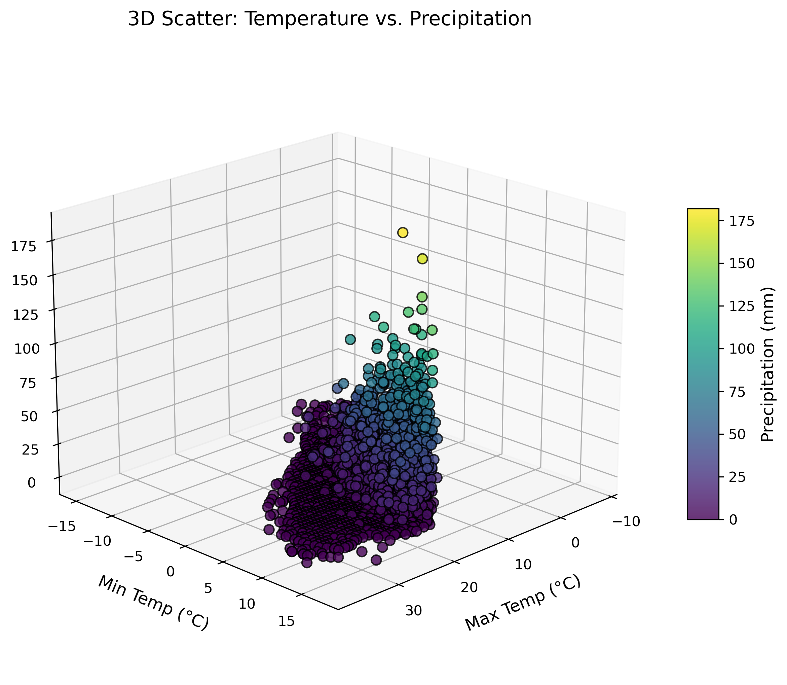
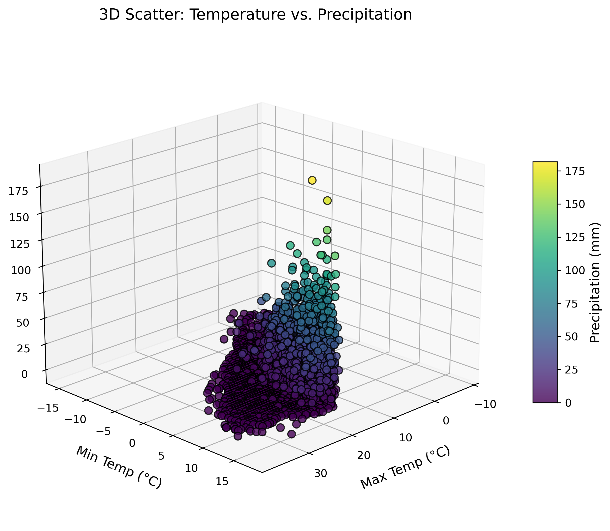
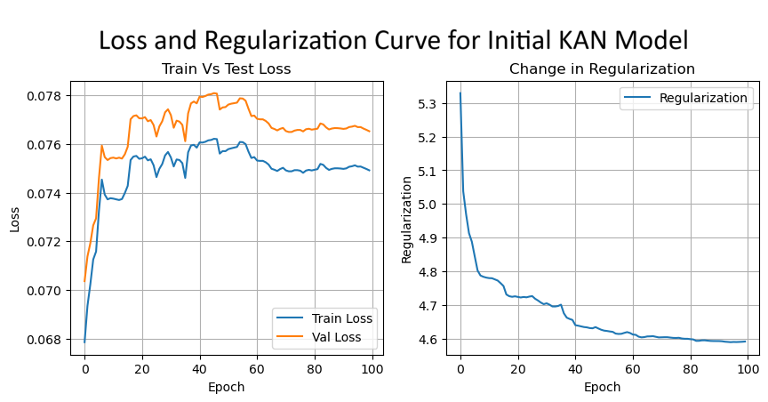
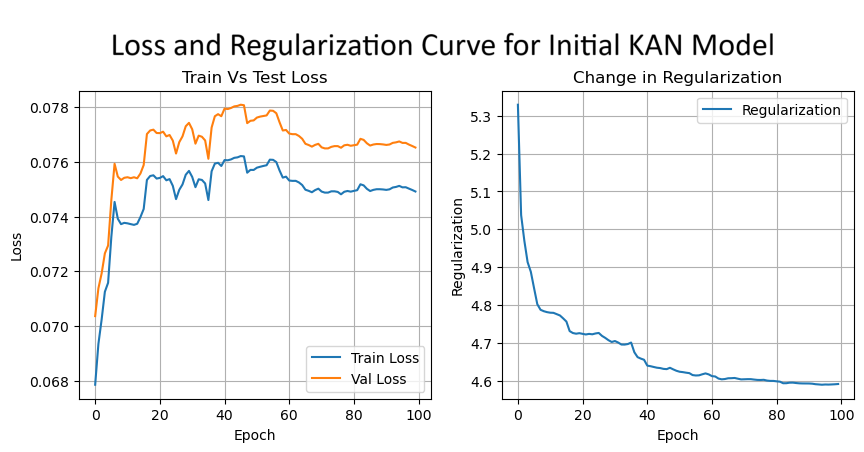
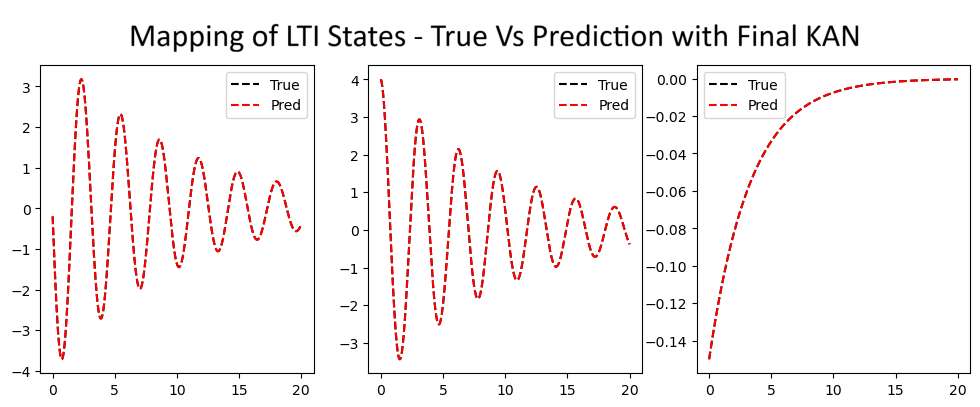
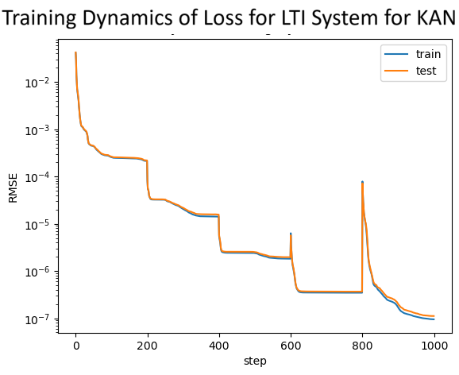
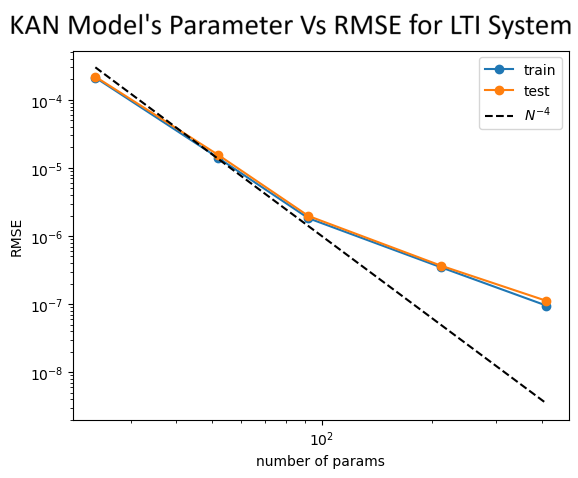
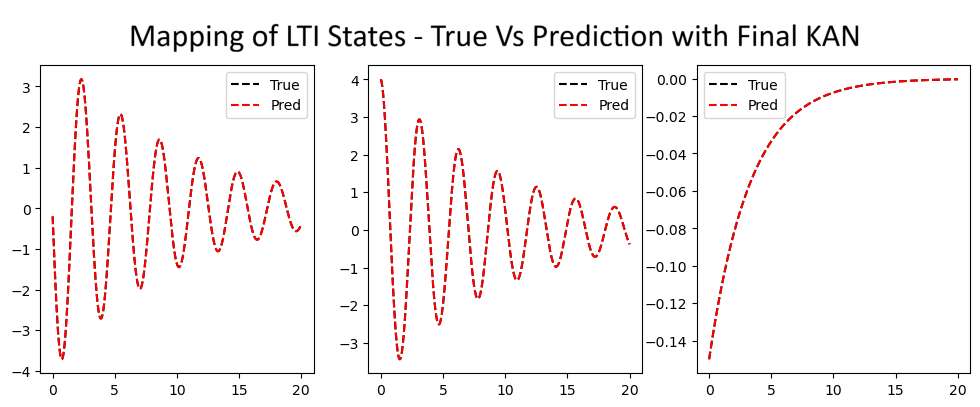
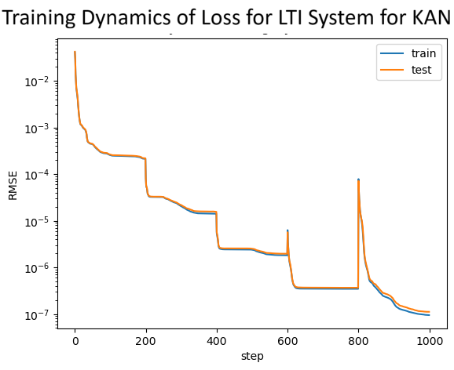
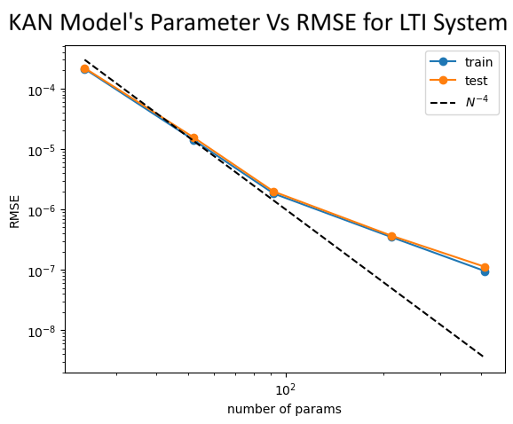

PROJECTS
Goal: The aim of this project is to analyze Global Historical Climatology Network daily (GHCNd) data to find the correlation among different features of a given location and use machine learning techniques to forecast a desired feature or more with some existing features as input for the learning problem.
Programming Language, Libraries and Models: The project is fully implemented in Python. Various libraries such as NumPy, Pandas, Xarray, Cartopy, SciPy, Scikit-learn, Matplotlib, Seaborn, and Plotly were used throughout the project. Considered models are Decision Tree, Linear Regression, Multi-Output Linear Regression and KNeighbors.
Result: For forecasting surface snow thickness and snowfall amount, Decision Tree model outperformed other models. For the Decision Tree model, train MSE: 0.000018, test MSE: 0.000080, train R²: 0.933264, and test R²: 0.933264. In predicting average temperature, KNeighbors outperformed other models with train MSE: 2.863456, test MSE: 4.624170, train R²: 0.873202, and test R²: 0.873202.
To see the project details, please Click Here.


 

Goal: The aim of this project is to identify the dynamics of different linear and nonlinear systems using Kolmogorov-Arnold Network and compare the result with Neural Network based system identification models. We will consider one 3rd order linear time invariant system and one 2 nd order nonlinear system due to lack of computational resources.
Programming Language, Libraries and Models: The project is fully implemented in Python. Various libraries such as NumPy, SciPy and Matplotlib were used throughout the project. Considered models are Kolmogorov Arnold Network and Neural Network.
Result: Using Kolmogorov–Arnold Networks, we can learn from past data of complex real world systems and forecast their future behavior with an accuracy of 99%. In contrast, Neural Networks can only approximate the linear system; they fail to accurately approximate the nonlinear system. Kolmogorov-Arnold Network is more interpretable than any other AI models and more efficient in system identification. With more computational power, it will be able to perform system identification of higher order dynamical systems.
To see the project details, please Click Here.


 


 





Delivered an in-depth analysis of the Kerberos Protocol suite, outlining its critical functions in enhancing network security and ensuring secure authentication within computer networks.
Demonstrated the critical need to identify and address software vulnerabilities, highlighting the risks associated with outdated components, as listed in the OWASP Top 10 (Demo Link).
Developed an innovative IAM policy for IMS Soft-Switch, focusing on robust security measures and streamlined operational processes; this strategic implementation resulted in a 20% increase in operational productivity.
Conducted a vulnerability assessment on the IMS Soft-Switch and BOSS using Nessus by Tenable to identify the top 100 web application vulnerabilities, and delivered a detailed report to management, emphasizing the need for remediation to ensure system security.
Designed and implemented optical distribution network, installed and commissioned optical line terminal to provide high speed internet and IP based telephony service for the first time in district level in Bangladesh.
Installed and commissioned 24 core optical fiber backbone, and optical distribution frame for Optical Add-drop Multiplexer to secure seamless connection between districts.
PUBLICATIONS
01. Miji, Md Kausar Hamid et al. “Work in Progress: Emerging From Shadows: Optimal Hidden Actuator Attack to Cyber-Physical Systems” In: IEEE Real-Time and Embedded Technology and Applications Symposium (2024).
02. Mohammad, Nur, Md Kausar Hamid Miji, and Prodipto Chowdhury Assisted Vehicle Driving Embedded with Autonomous Security System” In: 2nd International Conference on EICT, KUET, Bangladesh (2015).